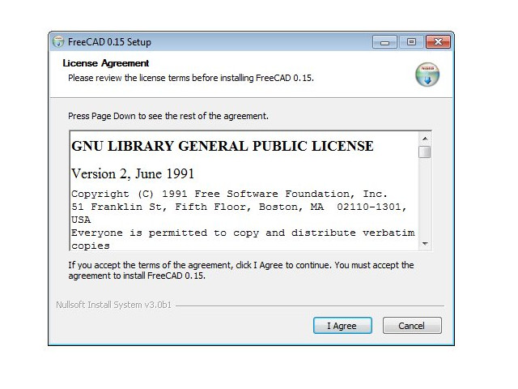
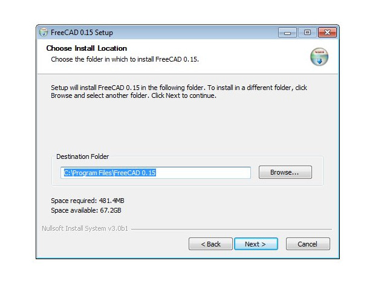
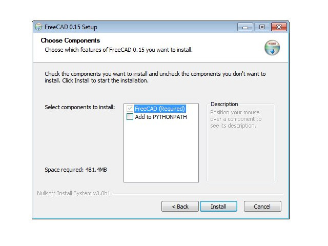
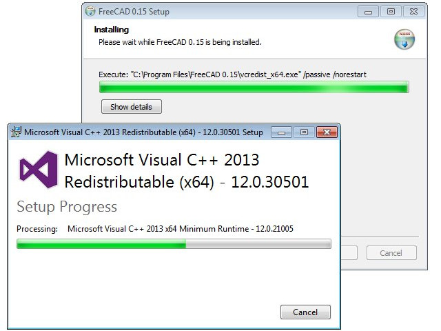
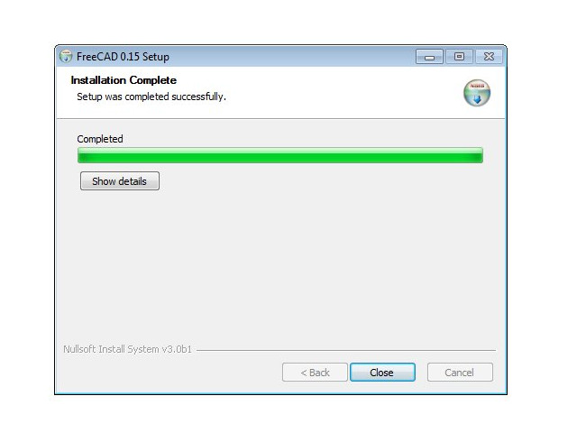

Manual:Installing/pt-br
- Introduction
- Discovering FreeCAD
- Working with FreeCAD
- Python scripting
- The community
O FreeCAD utiliza a licença LGPL; você pode baixar, instalar, redistribuir e usar o FreeCAD da maneira que desejar, independentemente do tipo de trabalho que você realizará com ele (comercial ou não comercial). Você não está vinculado a nenhuma cláusula ou restrição, e os arquivos que você produzir com ele são totalmente seus. A única coisa que a licença realmente proíbe é afirmar que você programou o FreeCAD por conta própria!
O FreeCAD se comporta da mesma forma no Windows, Mac OS e Linux. No entanto, o processo de instalação difere um pouco dependendo da sua plataforma. No Windows e Mac, a comunidade do FreeCAD fornece pacotes pré-compilados (instaladores) prontos para download; enquanto no Linux, o código-fonte é disponibilizado aos mantenedores das distribuições Linux, que são responsáveis por empacotar o FreeCAD para suas distribuições específicas. Como resultado, no Linux, você geralmente pode instalar o FreeCAD diretamente pelo aplicativo de gerenciador de software.
A página oficial para baixar o FreeCAD para Windows e Mac OS é https://github.com/FreeCAD/FreeCAD/releases.
Versões do FreeCAD
As versões oficiais do FreeCAD, que você pode encontrar na página mencionada acima e no gerenciador de software da sua distribuição, são versões estáveis. No entanto, o desenvolvimento do FreeCAD é rápido! Novos recursos e correções de bugs são adicionados quase todos os dias. Como pode demorar um tempo entre os lançamentos estáveis, você pode ter interesse em testar uma versão mais atualizada do FreeCAD. Essas versões de desenvolvimento, ou pré-lançamentos, são carregadas de tempos em tempos na página de download mencionada acima, ou, se você estiver usando Ubuntu ou Fedora, a comunidade do FreeCAD também mantém o PPA (Personal Package Archives) e os 'daily builds' no copr que são atualizados regularmente com as mudanças mais recentes.
Se você estiver instalando o FreeCAD em uma máquina virtual, esteja ciente de que o desempenho pode ser baixo (em alguns casos, inutilizável) devido às limitações do suporte a OpenGL na maioria das máquinas virtuais.
Instalando no Windows
- Baixe o instalador (.exe) correspondente à sua versão do Windows (32bit ou 64bit) na página de downloads. Os instaladores do FreeCAD devem funcionar em qualquer versão do Windows a partir do Windows 7.
- Dê um clique duplo no instalador baixado.
- Aceite os termos da licença LGPL, este será um dos poucos casos em que você pode realmente clicar no botão "aceitar" sem ler o texto. Sem cláusulas ocultas:

- Você pode deixar o caminho padrão aqui ou mudar, se preferir:

- Não há necessidade de definir a variável PYTHONPATH, a menos que você planeje fazer alguma programação avançada em Python, caso em que provavelmente já sabe para que isso serve:

- Durante a instalação, alguns componentes adicionais, que estão agrupados dentro do instalador, também serão instalados:

- Pronto, o FreeCAD está instalado. Você o encontrará no menu iniciar.

Instalando uma versão de desenvolvimento
Empacotar o FreeCAD e criar um instalador leva algum tempo e dedicação, por isso, normalmente, as versões de desenvolvimento (também chamadas de pré-lançamento) são fornecidas como arquivos .zip (ou .7z). Estes não precisam ser instalados; basta descompactá-los e iniciar o FreeCAD dando um clique duplo no arquivo FreeCAD.exe que você encontrará dentro. Isso também permite que você mantenha as versões estáveis e "instáveis" juntas no mesmo computador.
Instalando no Linux
Na maioria das distribuições Linux modernas (Ubuntu, Fedora, openSUSE, Debian, Mint, Elementary, etc.), o FreeCAD pode ser instalado com um clique, diretamente do aplicativo de gerenciamento de software fornecido pela sua distribuição (a aparência pode diferir das imagens abaixo, pois cada distribuição utiliza sua própria ferramenta).
- Abra o gerenciador de software e procure por "freecad":

- Clique no botão "instalar" e pronto, o FreeCAD será instalado. Não se esqueça de avaliá-lo depois!


Métodos alternativos
Uma das grandes vantagens de usar o Linux é a multiplicidade de possibilidades para personalizar seu software, então não se restrinja. No Ubuntu e derivados, o FreeCAD também pode ser instalado a partir de um PPA mantido pela comunidade do FreeCAD (que contém versões estáveis e de desenvolvimento). No Fedora, versões recentes de desenvolvimento do FreeCAD podem ser instaladas a partir do copr, e como este é um software open source, você também pode facilmente compilar o FreeCAD você mesmo.
Instalando no Mac OS
Instalar o FreeCAD no Mac OS atualmente é tão fácil quanto nas outras plataformas. No entanto, como há menos pessoas na comunidade que possuem um Mac, os pacotes disponíveis às vezes ficam algumas versões atrás em relação às outras plataformas.
- Baixe o pacote compactado correspondente à sua versão na página de downloads.
- Abra a pasta Downloads e descompacte o arquivo zip baixado:

- Arraste o aplicativo FreeCAD de dentro do arquivo zip para a pasta Aplicativos:

- Pronto, o FreeCAD está instalado!


{kind=link}
{kind=link}
{kind=link}
{kind=link}
{kind=link}

Desinstalando
Esperamos que você não precise desinstalar o FreeCAD, mas é bom saber como fazer. No Windows e Linux, desinstalar o FreeCAD é bem simples. No Windows, use a opção padrão de "remover software" encontrada no painel de controle; no Linux, remova-o com o mesmo gerenciador de software que você usou para instalá-lo. No Mac OS, basta removê-lo da pasta Aplicativos.
Configurando preferências básicas
Uma vez que o FreeCAD esteja instalado, você pode querer abri-lo e alterar algumas preferências. As configurações de preferências do FreeCAD estão localizadas no menu Editar → Preferências. Abaixo estão algumas configurações básicas que você pode querer alterar; você pode navegar pelas páginas de preferências para verificar se há mais alguma coisa que deseja modificar.
General category, General tab

- Language: By default, FreeCAD will select your operating system's language, but you have the option to change it. Thanks to the dedication of many contributors, FreeCAD is available in a wide array of languages.
- Units: This setting allows you to choose the default units system for your projects.
General category, Document tab

- Create a new document at startup: FreeCAD will automatically open a new document each time the program starts.
- Storage options: Configure settings here to help you recover your work in the event of a crash.
- 'Authoring and license': In this area, you can determine the settings for new files. To facilitate sharing, consider starting with a more permissive, copyleft license like Creative Commons.

- Zoom at cursor: When enabled, zoom actions center on the mouse cursor. If disabled, zoom focuses on the center of the view.
- Invert zoom: This option reverses the zoom direction in relation to mouse movement.
Workbenches tab

Although FreeCAD typically opens to the start page, this setting lets you bypass it. You can start directly in your preferred workbench. Additionally, you can customize which workbenches are displayed in the selector menu.
Import-Export tab

Here, define basic parameters for importing and exporting in various formats.
Instalando conteúdo adicional
À medida que o projeto FreeCAD e sua comunidade crescem rapidamente, e também porque é fácil de estender, começam a surgir contribuições externas e projetos paralelos feitos por membros da comunidade e outros entusiastas em toda a internet. A maioria desses projetos externos são bancadas de trabalho ou macros, e podem ser facilmente instalados diretamente dentro do FreeCAD através do Gerenciador de Addons, localizado no menu Ferramentas. O gerenciador de addons permite que você instale muitos componentes interessantes, por exemplo:

- A Biblioteca de Peças, que contém todo tipo de modelos úteis, ou partes de modelos, criados pelos usuários do FreeCAD e que podem ser usados livremente em seus projetos. A biblioteca pode ser acessada diretamente dentro da sua instalação do FreeCAD.
- Bancadas de Trabalho Adicionais, que estendem a funcionalidade do FreeCAD para tarefas específicas, como animar partes de seus modelos ou áreas, como dobragem de chapas metálicas ou BIM. Explicações detalhadas de cada bancada e as ferramentas que ela contém estão disponíveis em cada página de addon, que você pode visitar clicando no link correspondente no gerenciador de addons.
- Uma coleção de macros, que também está disponível na wiki do FreeCAD junto com a documentação sobre como utilizá-las.
{kind=link}
Leia mais
- Mais opções de download
- PPA do FreeCAD para Ubuntu
- PPA de addons do FreeCAD para Ubuntu
- Compile o FreeCAD você mesmo
- Traduções do FreeCAD
- Página do FreeCAD no GitHub
- Gerenciador de addons do FreeCAD